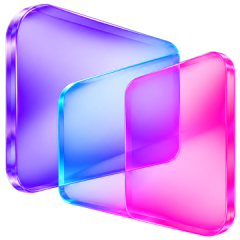

Parallax
Browser for PS5 and PS VR2
Links
Tests
View in VR tests (R3 while a video plays)
360 mono grid
180 3D side by side
180 3D top/bottom
180 mono
360 3D top/bottom
360 3D side by side
Fisheye 200 (MKX200) 3D
Flat video (big screen)
Fonts: العربية · עברית · हिन्दी · ไทย · বাংলা · தமிழ் · Ελληνικά · Русский · 日本語 · 中文 · 한국어 · ∑ ∞ → ★ · 😀 🎮 🚀 👍🏽 🇬🇧